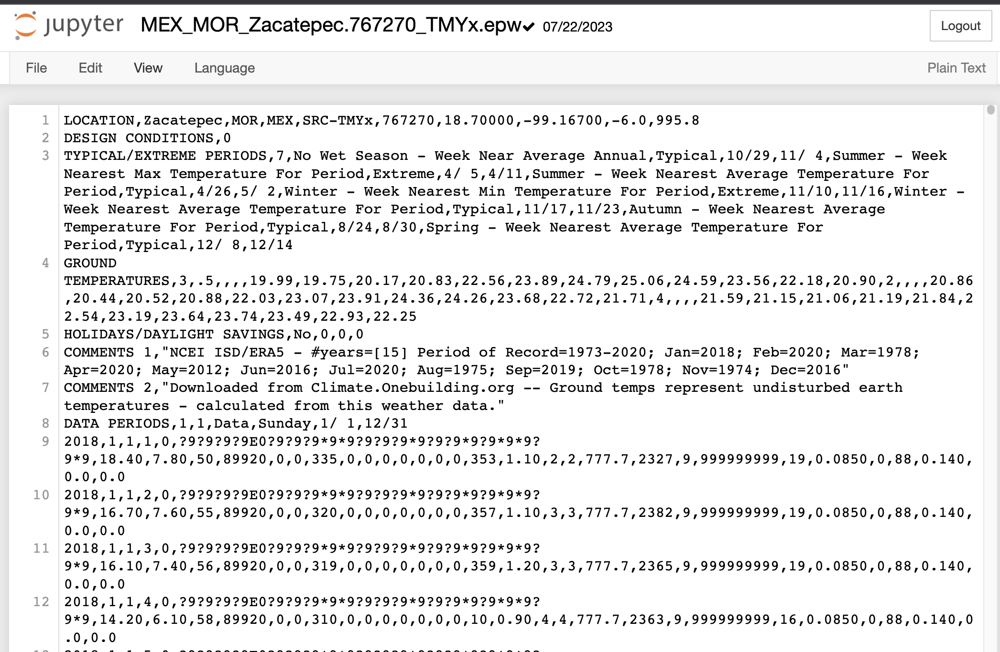
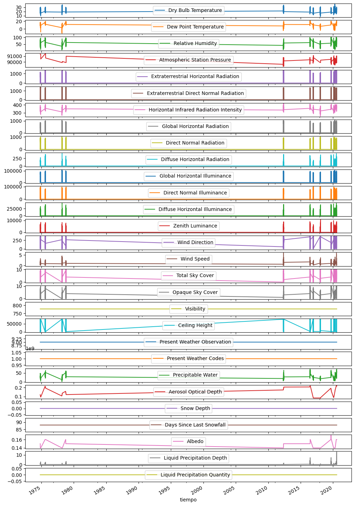
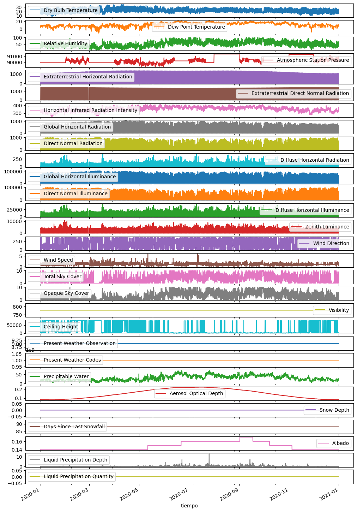
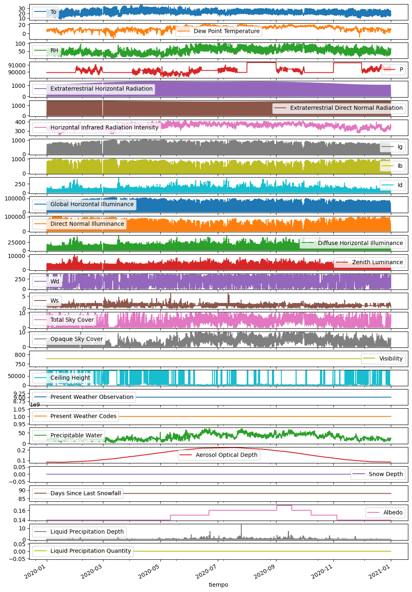

import pandas as pd
import warnings002 Fechas sin formato
Datos

Lista de nombres de cada columna
names = ['Year',
'Month',
'Day',
'Hour',
'Minute',
'Data Source and Uncertainty Flags',
'Dry Bulb Temperature',
'Dew Point Temperature',
'Relative Humidity',
'Atmospheric Station Pressure',
'Extraterrestrial Horizontal Radiation',
'Extraterrestrial Direct Normal Radiation',
'Horizontal Infrared Radiation Intensity',
'Global Horizontal Radiation',
'Direct Normal Radiation',
'Diffuse Horizontal Radiation',
'Global Horizontal Illuminance',
'Direct Normal Illuminance',
'Diffuse Horizontal Illuminance',
'Zenith Luminance',
'Wind Direction',
'Wind Speed',
'Total Sky Cover',
'Opaque Sky Cover',
'Visibility',
'Ceiling Height',
'Present Weather Observation',
'Present Weather Codes','Precipitable Water','Aerosol Optical Depth','Snow Depth','Days Since Last Snowfall',
'Albedo','Liquid Precipitation Depth','Liquid Precipitation Quantity']
f = '../data/001_raw/002_FechasSinFormato/MEX_MOR_Zacatepec.767270_TMYx.epw'
year = 2020
def carga_epw(file, year=None,alias=False):
epw = pd.read_csv(f,skiprows=8,header=None,names=names,usecols=range(35))
epw.Minute = 0
epw.loc[epw.Hour==24,['Hour','Minute']] = [23,59]
if year != None:
epw.Year = year
warnings.warn("Year has been changed, be carefull")
epw['tiempo'] = epw.Year.astype('str') + '-' + epw.Month.astype('str') + '-' + epw.Day.astype('str') + ' ' + epw.Hour.astype('str') + ':' + epw.Minute.astype('str')
epw.tiempo = pd.to_datetime(epw.tiempo,format='%Y-%m-%d %H:%M')
epw.set_index('tiempo',inplace=True)
del epw['Year']
del epw['Month']
del epw['Day']
del epw['Hour']
del epw['Minute']
if alias:
rename = {'Dry Bulb Temperature' :'To',
'Relative Humidity' :'RH',
'Atmospheric Station Pressure':'P' ,
'Global Horizontal Radiation' :'Ig',
'Direct Normal Radiation' :'Ib',
'Diffuse Horizontal Radiation':'Id',
'Wind Direction' :'Wd',
'Wind Speed' :'Ws'}
epw.rename(columns=rename,inplace=True)
return epw
f = '../data/001_raw/002_FechasSinFormato/MEX_MOR_Zacatepec.767270_TMYx.epw'
zac = carga_epw(f)zac.plot(subplots=True,figsize=(12,20));
f = '../data/001_raw/002_FechasSinFormato/MEX_MOR_Zacatepec.767270_TMYx.epw'
zac = carga_epw(f,year=2020)/var/folders/5r/jn_g7h3n0pv3v9fbjgr05h8w0000gn/T/ipykernel_30492/2370224686.py:10: UserWarning: Year has been changed, be carefull
warnings.warn("Year has been changed, be carefull")zac.plot(subplots=True,figsize=(12,20));
f = '../data/001_raw/002_FechasSinFormato/MEX_MOR_Zacatepec.767270_TMYx.epw'
zac = carga_epw(f,year=2020,alias=True)/var/folders/5r/jn_g7h3n0pv3v9fbjgr05h8w0000gn/T/ipykernel_30492/2370224686.py:10: UserWarning: Year has been changed, be carefull
warnings.warn("Year has been changed, be carefull")zac.plot(subplots=True,figsize=(12,20));
zac.columnsIndex(['Data Source and Uncertainty Flags', 'To', 'Dew Point Temperature',
'RH', 'P', 'Extraterrestrial Horizontal Radiation',
'Extraterrestrial Direct Normal Radiation',
'Horizontal Infrared Radiation Intensity', 'Ig', 'Ib', 'Id',
'Global Horizontal Illuminance', 'Direct Normal Illuminance',
'Diffuse Horizontal Illuminance', 'Zenith Luminance', 'Wd', 'Ws',
'Total Sky Cover', 'Opaque Sky Cover', 'Visibility', 'Ceiling Height',
'Present Weather Observation', 'Present Weather Codes',
'Precipitable Water', 'Aerosol Optical Depth', 'Snow Depth',
'Days Since Last Snowfall', 'Albedo', 'Liquid Precipitation Depth',
'Liquid Precipitation Quantity'],
dtype='object')zac.to_csv('../data/002_processed/zacatepec.csv')epw = pd.read_csv('../data/002_processed/zacatepec.csv',index_col=0,parse_dates=True)
epw.plot(subplots=True,figsize=(12,20));